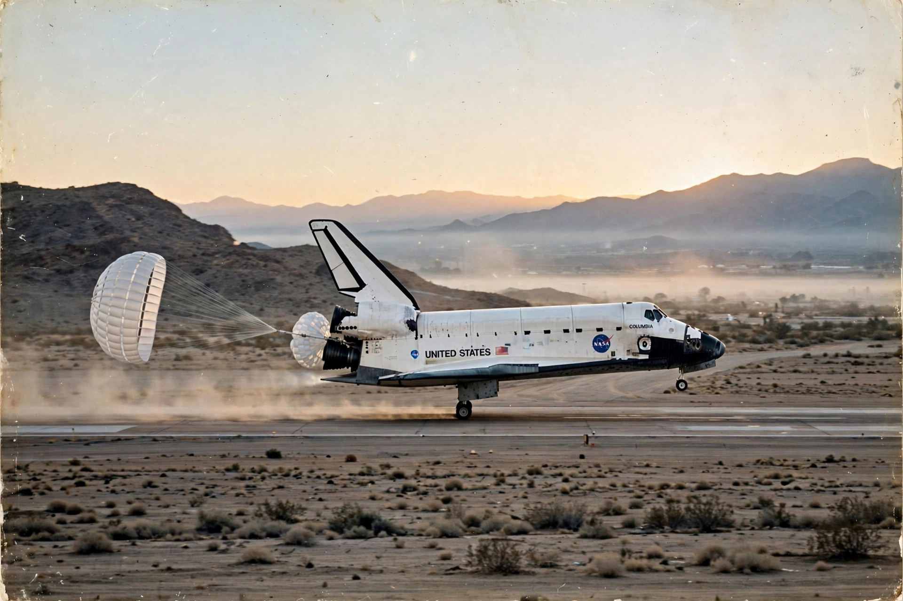

Buran (spacecraft)
From Wikipedia, the free encyclopedia
| Buran (spacecraft) | |
|---|---|
| Country | Soviet Union |
| Only flight | 15 November 1988 (uncrewed, automatic) |
| Launched on | Energia |
| Fate | Programme cancelled 1993; flown orbiter destroyed 2002 |

Buran lands automatically, 1988.Buran (Russian: Буран, "snowstorm") was the Soviet reusable spaceplane developed in response to the American Space Shuttle. Visually near-identical to its rival — a resemblance rooted in shared aerodynamics and Soviet intelligence collection — Buran differed in key ways: it carried no main engines (those were on the Energia booster), and it was designed from the start to fly fully automatically.
Its single spaceflight, on 15 November 1988, remains a technical landmark: launched uncrewed in poor weather, Buran orbited twice and landed automatically on a Baikonur runway in a strong crosswind, the onboard computers adjusting the approach in ways its designers had not programmed explicitly. No second flight came; the programme was cancelled in 1993 after the Soviet collapse, and the flown orbiter was destroyed in 2002 when its hangar roof collapsed.
Legacy
Test articles and unfinished orbiters survive as museum pieces in Russia, Kazakhstan and Germany. Buran's automatic landing — achieved by a country that had never flown a crewed winged spacecraft — is still cited in autonomous-flight discussions, and its story closes the Space Race era: the last great Soviet space programme, completed just as the state that built it vanished.
See also
Energia (rocket) · Space Shuttle · N1 (rocket) · Baikonur Cosmodrome